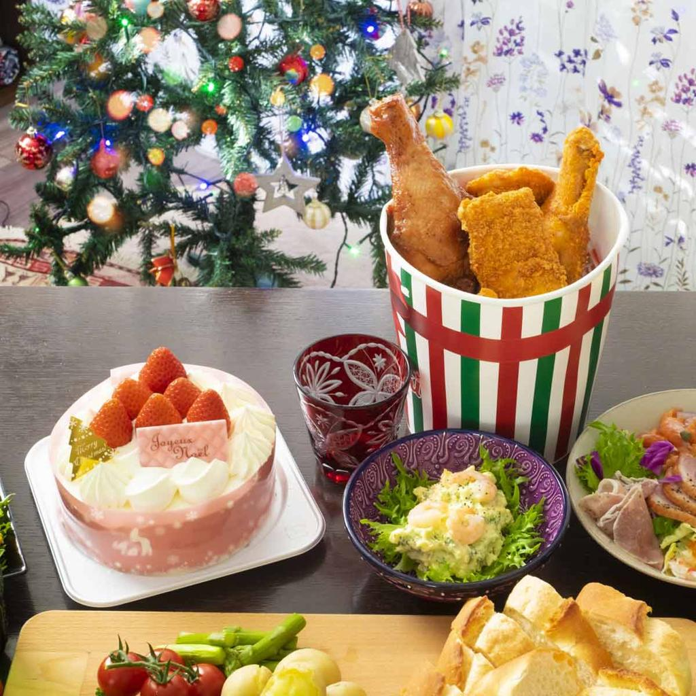
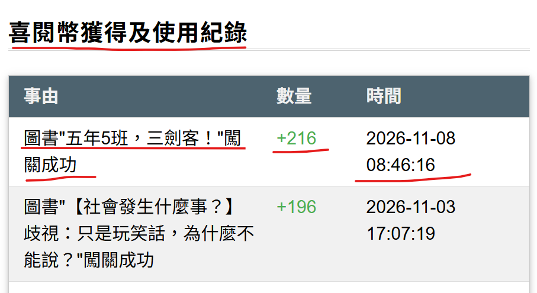

🌍 日本的聖誕文化報報

你知道嗎？在日本，聖誕節吃肯德基炸雞，是許多人喜愛的過節方式！1974年，肯德基推出聖誕節廣告，邀請大家用炸雞慶祝佳節。沒想到大受歡迎，逐漸形成特別的節慶習慣。現在，有些家庭會提前預訂炸雞套餐，搭配聖誕蛋糕，與親友共享美食。原來，商業廣告也可能創造新的節慶文化！
💡 任務解鎖測驗 (低年級)：
日本有些家庭在聖誕節喜歡吃什麼？
日本有些家庭在聖誕節喜歡吃什麼？
💡 任務解鎖測驗 (中年級)：
為什麼肯德基炸雞會成為日本受歡迎的聖誕餐點？
為什麼肯德基炸雞會成為日本受歡迎的聖誕餐點？
💡 任務解鎖測驗 (高年級)：
日本的聖誕炸雞文化，最能說明哪一個現象？
日本的聖誕炸雞文化，最能說明哪一個現象？
任務已解鎖！
聖誕村的閱讀星星正在等待勇敢的挑戰者！讀一本書，到喜閱網完成閱讀測驗，再把成功過關的證明帶回聖誕村，就能點亮你的閱讀星星！
聖誕村的閱讀星星正在等待勇敢的挑戰者！讀一本書，到喜閱網完成閱讀測驗，再把成功過關的證明帶回聖誕村，就能點亮你的閱讀星星！
⚠️ 截圖提醒：請參考上方圖片，截圖必須清楚看到「書名」、「過關日期」與「獲得點數」。
